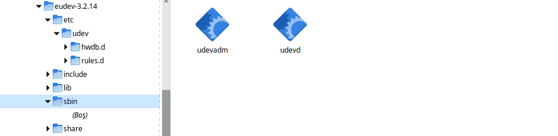

initrd¶
initrd (initial RAM disk), Linux işletim sistemlerinde kullanılan bir geçici dosya sistemidir. Bu dosya sistemi, işletim sistemi açılırken kullanılan bir köprü görevi görür ve gerçek kök dosya sistemine geçiş yapmadan önce gerekli olan modülleri ve dosyaları içerir.Ayrıca, sistem başlatıldığında kök dosya sistemine erişim sağlamadan önce gerekli olan dosyaları yüklemek için de kullanılabilir. Bu bölümü uygualamadan önce uygualam adımlarını daha anlayabilmek için mutlaka initr tasalama konusunu okumalısınız. initrd Tasarımı
Temel Dosyalar¶
Linux sisteminin açılabilmesi için aşağıdaki 3 dosya yeterlidir. Bu dosyalar yardımıyla sistem açılışı yapılır ve diskimizde bulunan sistemi bu 3 dosya yardımıyla çalıştırır ve hazır hale getiririz. Şimdi sısrasıyla 3 dosyamızı nasıl hazırlayacağımızı adım adım uygulayalım. Doayaları moluşturduktan sonrada iso haline getirerek sistemi çalışır hale getirelim.
distro/iso/boot/initrd.img
distro/iso/boot/vmlinuz
distro/iso/boot/grub/grub.cfg
distro/iso/boot/initrd.img dosyası sistemin açılış sürecinde ön işlemleri yaparak gerçek sisteme geçiş sürecini yöneten bir dosyadır. Yazın devamında nasıl hazırlanacağı anlatılacaktır.
distro/iso/boot/vmlinuz dosyamız kernelimiz oluyor. Ben kullandığım debian sisteminin mevcut kernelini kullandım. İstenirse kernel derlenebilir.
distro/iso/boot/grub/grub.cfg dosyamız ise initrd.img ve vmlinuz dosyalarının grub yazılımını nerede bulacağını gösteren yapılandırma dosyasıdır.
linux Açılış Süreci¶
Bilgisayara Güç Verilmesi
Bios İşlemleri Yapılıyor(POST)
LILO/GRUB Yazılımı Yükleniyor(grub.cfg dosyası okunuyor ve vmlinuz ve initrd.img devreye giriyor)
vmlinuz initrd.img sistemini belleğe yüklüyor
initrd.img içindeki init dosyasındaki işlem sürecine göre sistem işlemlere devam ediyor**
initrd.img içindeki init dosyası temel işlemleri ve modülleri yükledikten sonra disk üzerindeki sisteme(/sbin/init) exec switch_root komutuyla süreci devrederek görevini tamamlamış olur
Yazının devamında sistem için gerekli olan 3 temel dosyanın(initrd.img, vmlinuz, grub.cfg) hazırlanması ve iso yapılma süreci anlatılacaktır.
initrd Dosya İçeriği¶
initrd.img dosyasını hazırlarken gerekli olacak dosyalarımızın dizin yapısı ve konumu aşağıdaki gibi olmalıdır. Anlatım buna göre yapalacaktır. Örneğin S1 ifadesi satır 1 anlamında anlatımı kolaylaştımak için yazılmıştır. Aşağıdaki yapıyı oluşturmak için yapılması gerekenleri adım adım anlatılacaktır.
S1- $boot/bin/busybox #dosya S2- $boot/sbin/kmod #dosya S3- $boot/sbin/debmod #dosya S4- $boot/sbin/insmod #dosya S5- $boot/bin/lsmod #dosya S6- $boot/sbin/modprobe #dosya S7- $boot/sbin/rmmod #dosya S8- $boot/sbin/modinfo #dosya S9- $boot/lib/modules/$(uname -r)/moduller #dizin S10- $boot/bin/udevadm #dosya S11- $boot/bin/udevd #dosya S12- $boot/etc/udev/rules.d #dizin S13- $boot/lib/udev/rules.d #dizin S14- $boot/initrd/bin/init #dosya S15- distro/iso/initrd.img #dosya S16- distro/iso/vmlinuz #dosya S17- distro/iso/grub/grub.cfg #dosya
S1-S17 arasındaki dosya ve dizin yapısını hazırladığımız initrd adındaki script hazırlayacak ve iso haline getirecektir.
S1-S17 arasındaki adımları yapacak initrd scripti aşağıdaki gibi hazırlandı.
initrd Scripti¶
#!/bin/bash
boot=$HOME/distro/initrd
rm -rf $boot
mkdir -p $HOME/distro
mkdir -p $boot
mkdir -p $boot/bin
#****************hazırlanmış olan bps paketlerimiz yükleniyor**********
./bpsupdate
./bpskur glibc $boot/ # Dağıtımımızın temel kütüphanesini oluşturan paket yükleniyor
./bpskur busybox $boot/ # S1- distro/initrd/bin/busybox paketi yükleniyor
./bpskur kmod $boot/ # S2-S8 distro/initrd/bin/kmod aşamalarını kmod paketi yüklenince oluşur
#****************modul yukleme******************S9- distro/initrd/lib/modules/$(uname -r)/moduller hazırlanıyor
mkdir -p $boot/lib/modules/
mkdir -p $boot/lib/modules/$(uname -r)
mkdir -p $boot/lib/modules/$(uname -r)/moduller
cp /lib/modules/$(uname -r)/kernel/* -prvf $boot/lib/modules/$(uname -r)/moduller/ #sistemden kopyalandı..
/sbin/depmod --all --basedir=$boot #modul indeksi oluşturluyor
./bpskur eudev $boot/ # S10-S13 eudev paketi yüklenerek oluşturur
./bpskur base-file $boot/ # S14- $boot/initrd/bin/init oluşturma
./bpskur util-linux $boot/
./bpskur grub $boot/
./bpskur e2fsprogs $boot/
#*****************initrd.img oluşturuluyor***********# S15- distro/iso/initrd.img
cd $boot
find | cpio -H newc -o >../initrd.img
#************************iso *********************************
mkdir -p $HOME/distro/iso
mkdir -p $HOME/distro/iso/boot
mkdir -p $HOME/distro/iso/boot/grub
mkdir -p $HOME/distro/iso/live || true
#iso dizinine vmlinuz ve initrd.img dosyamız kopyalanıyor
cp /boot/vmlinuz-$(uname -r) $HOME/distro/iso/boot/vmlinuz #sistemde kullandığım kerneli kopyaladım istenirde kernel derlenebilir.
mv $HOME/distro/initrd.img $HOME/distro/iso/boot/initrd.img #oluşturduğumuz **initrd.img** dosyamızı taşıyoruz.
#grub menüsü oluşturuluyor..
cat > $HOME/distro/iso/boot/grub/grub.cfg << EOF
linux /boot/vmlinuz net.ifnames=0 biosdevname=0
initrd /boot/initrd.img
boot boot=live
EOF
S1- $boot/bin/busybox¶
busybox küçük boyutlu dağıtım ve initrd hazırlamada kullanılan, birçok uygulamayı içinde barındıran dosyamızdır. Temel Paketler başlığı altında nasıl derleneceği anlatıldı. Derleme ve paket oluşturma aşamalarında busybox paketinizi oluşturduğunuzu varsayıyoruz. Burada sisteme nasıl ekleneceği anlatılacaktır.
./bpskur busybox $boot/
S2-S8 $boot/bin/kmod¶
kmod yazısında kmod anlatılmıştır. Burada sisteme nasıl ekleneceği anlatılacaktır. kmod paketi aşağıdaki komut satırıyla kurulmaktadır.
./bpskur kmod $boot/
Kurulum tamamlandığında paket içerisindeki dosya ve sembolik link dosyaları aşağıdaki gibi $boot konumuna yüklenecektir.
$boot/sbin/kmod
ln -s $boot/sbin/kmod $boot/sbin/depmod #kmod sembolik link yapılarak depmod hazırlandı.
ln -s $boot/sbin/kmod $boot/sbin/insmod #kmod sembolik link yapılarak insmod hazırlandı.
ln -s $boot/sbin/kmod $boot/bin/lsmod #kmod sembolik link yapılarak lsmod hazırlandı.
ln -s $boot/sbin/kmod $boot/sbin/modinfo #kmod sembolik link yapılarak modinfo hazırlandı.
ln -s $boot/sbin/kmod $boot/sbin/modprobe #kmod sembolik link yapılarak modprobe hazırlandı.
ln -s $boot/sbin/kmod $boot/sbin/rmmod #kmod sembolik link yapılarak rmmode hazırlandı.
S9- $boot/lib/modules/$(uname -r)/moduller¶
Bu bölümde modüller hazırlanacak. Burada dikkat etmemiz gereken önemli bir nokta kullandığımız kernel versiyonu neyse $boot/lib/modules/modules altında oluşacak dizinimiz aynı olmalıdır. Bundan dolayı $boot/lib/modules/$(uname -r) şeklinde dizin oluşturulmuştur. Aşağıda kullandığımız son satırdaki /sbin/depmod --all --basedir=initrd, $boot/lib/modules/$(uname -r)/moduller altındaki modullerimizin indeksini oluşturuyor.
mkdir -p $boot/lib/modules/
mkdir -p $boot/lib/modules/$(uname -r)
mkdir -p $boot/lib/modules/$(uname -r)/moduller
cp /lib/modules/$(uname -r)/kernel/* -prvf $boot/lib/modules/$(uname -r)/moduller/ #modüüler sistemden kopyalandı..
/sbin/depmod --all --basedir=$boot #modüllerin indeks dosyası oluşturuluyor
S10-S13- $boot/bin/udevadm¶
udevadm, Linux işletim sistemlerinde kullanılan bir araçtır. Bu araç, udev (Linux çekirdeği tarafından sağlanan bir hizmet) ile etkileşim kurmamızı sağlar. udevadm sistemdeki aygıtların yönetimini kolaylaştırmak için kullanılır. udevd ise udevadm'in bir bileşenidir ve donanım olaylarını işlemek için kullanılır.
./bpskur eudev $boot/ # paket kuruluyor
Paket kurulunca aşağıdaki gibi bir dizin yapısı ve dosyalar dağıtım dizinimize($boot) yüklenecektir.
{kind=link}
S14- distro/initrd/bin/init¶
kernel ilk olarak initrd.img dosyasını ram'e yükleyecek ve ardından init dosyasının arayacaktır. Bu dosya bir script dosyası veya binary bir dosya olabilir. init ve sistem için gereken temel dosyaları base-file paketi olarak hazırladık. base-file paketi aşağıdaki komutla kurulur.
./bpskur base-files $boot/ # paket kuruluyor
base-file* paketi içindeki init script dosyası aşağıdaki gibi hazırlandı.
init Dosyası¶
#!/bin/busybox ash
/bin/busybox mkdir -p /bin
/bin/busybox --install -s /bin
#**********************************
export PATH=/sbin:/bin:/usr/bin:/usr/sbin:
[ -d /dev ] || mkdir -m 0755 /dev
[ -d /root ] || mkdir -m 0700 /root
[ -d /sys ] || mkdir /sys
[ -d /proc ] || mkdir /proc
mkdir -p /tmp /run
touch /dev/null
# devtmpfs does not get automounted for initramfs
mount -t devtmpfs devtmpfs /dev
mount -t proc proc /proc
mount -t sysfs sysfs /sys
mount -t tmpfs tmpfs /tmp
#******************************init üzerinden dosya script çalışrtımak için****
for x in $(cat /proc/cmdline); do
case $x in
init=*)
init=${x#init=}
echo " bu bir test :${x#init=}"
${x#init=}
;;
esac
done
echo "initrd başlatıldı"
/bin/busybox ash
Oluşturulan initrd.img dosyası çalışacak tty açacak(konsol elde etmiş olacağız. Aslında bu işlemi yapan şey busybox ikili dosyası.
S15- distro/iso/initrd.img¶
initrd.img dosyası kernel(vmlinuz) ile birlikte kullanılan belleğe ilk yüklenen dosyadır. Bu dosyanın görevi sistemin kurulu olduğu diski tanımak için gereken modülleri yüklemek ve sistemi başlatmaktır.
Bu dosya /boot/initrd.img-xxx konumunda yer alır. $HOME/distro/initrd.img konumuna dosyamız aşağıdaki gibi oluşturulur.
cd $boot
find | cpio -H newc -o >../initrd.img
initrd.img iso dosyası hazırlamak için $HOME/distro/iso/boot/initrd.img konumuna taşındı.
mv $HOME/distro/initrd.img iso/boot/initrd.img # Oluşturulan **initrd.img** dosyası taşınır.
S16- distro/iso/vmlinuz¶
vmlinuz linuxta kernel diye ifade edilen dosyadır. Burada kernel derlemek yerine debianda çalışan kernel dosyamı kullandım. Kernel derlediğinizde vmlinuz dosyası elde edeceksiniz. Kernel derleme ayrı başlık altında anlatılmaktadır.
cp /boot/vmlinuz-$(uname -r) iso/boot/vmlinuz #sistemde kullandığım kerneli kopyaladım istenirde kernel derlenebilir.
S17- distro/iso/grub/grub.cfg¶
grub menu dosyası oluşturuluyor.
cat > iso/boot/grub/grub.cfg << EOF
linux /boot/vmlinuz
initrd /boot/initrd.img
boot
EOF
Yukarıdaki script iso/boot/grub/grub.cfg dosyasının içeriği olacak şekilde ayarlanır.
distro/iso/boot/initrd.img
distro/iso/boot/vmlinuz
distro/iso/boot/grub/grub.cfg
Bu dosyaları yukarıdaki gibi dizin konumlarına koyduktan sonra;
grub-mkrescue iso/ -o distro.iso #iso doyamız oluşturulur.
Bu komut çalışınca distro.iso dosyası elde ederiz. Artık iso dosyamız boot edebilen hazırlanmış bir dosyadır.